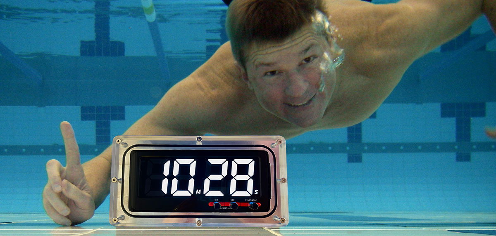
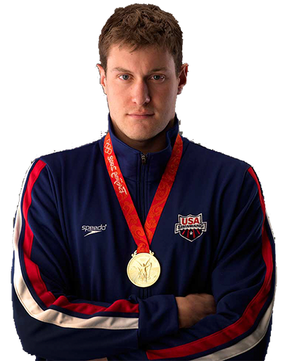

LED Clock
images/led-clock.jpg
Light-Emitting Digits
LED Underwater Pace Clock
Glowing LED digits with three brightness levels — the brightest, most visible option for indoor pools, low light and deep water.
$465 USD
Stop lifting your head to find the wall clock. PACE PAL® sits on the bottom of the pool, right in your line of sight — bold digits you can read 25 yards away, even with goggles on, even underwater.
A deck clock only helps if you break your stroke to read it — lift your head, drop your hips, and lose the back half of the lap. In a flow-current pool there's nowhere to put one at all. So most swimmers guess their pace and train in second gear.
Lifting to catch the wall clock wrecks your body position and kills your streamline off every single wall.
Across the pool, with goggles on, underwater — a deck clock is a blur at the exact moment you need your split.
Flow-current and Endless Pools® leave you with no usable clock position at all — so you swim blind.
PACE PAL® fixes all three. It sits on the bottom of the pool, in your line of sight, so you hold pace without ever breaking position. See how it works →
Bold LED digits you can read across the pool. Tap a mode to watch it run — exactly like the clock on the bottom of your lane.
Most clocks sit on the deck where you can barely see them. PACE PAL® sits where you swim — bright, bold, and impossible to miss on every breath.
Sealed for the deep end. Drop it on the bottom of the pool and it keeps perfect time, dive after dive.
Digits 2¼″ tall with three brightness levels. Readable from ~25 yards away, goggles on, underwater.
8+ sessions of 100 minutes per charge. It sleeps to save power, then wakes the instant you need it.
From 0 to 99:59, your way. Run intervals, send-offs and USRPT sets without ever leaving the wall.
Aluminum nest and acrylic lens machined in the USA. ~5.4 lbs of robust, replaceable hardware.
Suction-cup silicone pad anchors it to smooth pool bottoms — and to the mirror in your Endless Pool®.

images/in-pool.jpgWeighing in at about 5 lbs, PACE PAL® sits stable on the pool bottom. The included double-sided multi-suction silicone pad locks it to smooth surfaces — and to the bottom mirror of flow-current pools like Endless Pools®.
Glowing LED digits with three brightness levels — the brightest, most visible option for indoor pools, low light and deep water.

High-contrast bold black digits on silver. Optimal in outdoor pools and well-lit natatoriums where ambient light does the work.
Ultra-Short Race-Pace Training lives and dies by the clock. PACE PAL® puts your send-off right in your line of sight so you hold pace, rep after rep — no squinting at the wall, no breaking rhythm.
From gold medalists to NCAA programs, Pace Pal is on deck — and on the pool bottom — with some of the best in the sport.

4× Olympic medalist · 2× Olympic gold
A University of Michigan great with five NCAA titles and four Olympic medals, Peter used Pace Pal for six months before agreeing to endorse it. He's joined by Olympic coach Gregg Troy and Michigan's Mike Bottom.
"Love my Pace Pal — use it every time I am in my Endless Pool."
"Pace Pal clocks have been a real plus for our program — making training more reliable and visible to our athletes."
"Love my Pace Pal digital pace-clock that sits right at the end of my lane… or even underwater! Larry Day, you are a genius."
"I've been a swimmer most of my life and always wanted a highly visible pace clock on the bottom of the pool — so I created PACE PAL®."
Try PACE PAL® for 60 days. If it's not the most visible clock you've ever trained with, send it back for a full refund.